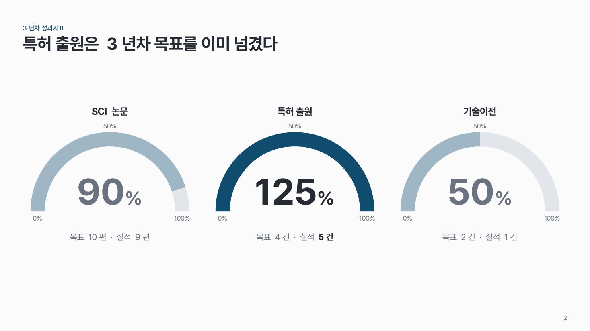
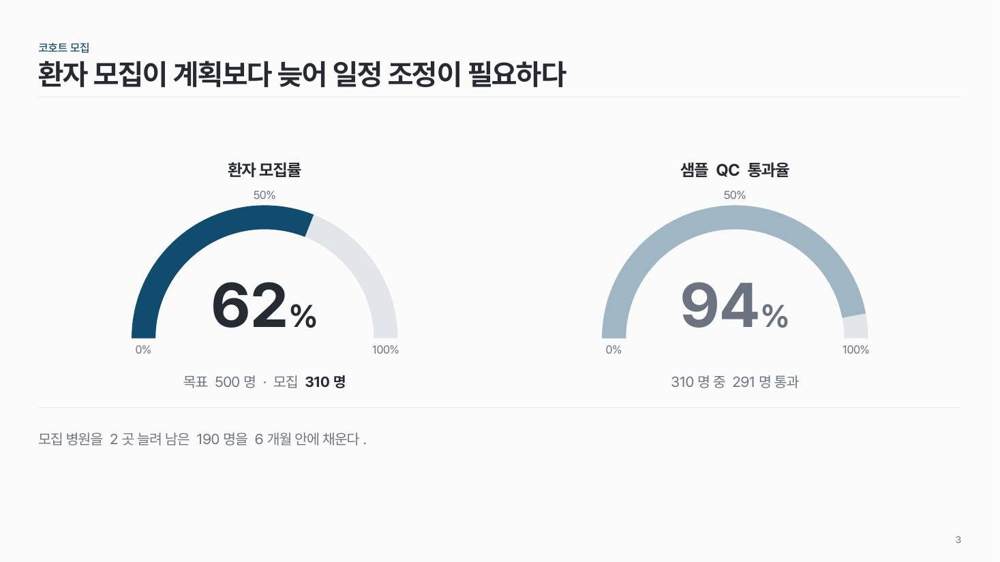

반원 게이지 data-05
목표 대비 달성률 하나를 반원 아치로. 가운데 큰 숫자, 아래 목표 · 실적 한 줄.

이 시안
게이지 1개 · 목표·실적 줄 + 결론 줄
슬라이드 제목: SCI 논문은 3년차 목표의 90%를 채웠다
언제 쓰나
과제 성과지표처럼 0–100% 달성률 하나가 핵심일 때요. 두세 개까지 나란히 둘 수 있어요.
구성
- 위에 지표 이름.
- 회색 반원 트랙 위에 달성률만큼 진한 아치.
- 가운데 큰 숫자, 0 · 50 · 100% 눈금.
- 아래 한 줄: 목표 · 실적.
지킬 것
- 게이지는 한 장에 1–3개. 여럿이면 핵심 하나만 진하게.
- 100%를 넘어도 아치는 꽉 찬 데서 멈추고 숫자만 그대로.
하지 말 것
- 빨강 · 노랑 · 초록 구간을 나누지 않아요.
- 바늘과 눈금을 겹겹이 달아 계기판처럼 꾸미지 않아요.
시안 비교
같은 내용을 옵션만 바꿔 그렸어요. 그림을 누르면 크게 보여요.
A게이지 1개 · 목표·실적 줄 + 결론 줄
슬라이드 제목: SCI 논문은 3년차 목표의 90%를 채웠다

B게이지 3개 · 하나 강조 (100% 넘는 값은 꽉 채움)
슬라이드 제목: 특허 출원은 3년차 목표를 이미 넘겼다

C게이지 2개 · 앞쪽 강조
슬라이드 제목: 환자 모집이 계획보다 늦어 일정 조정이 필요하다